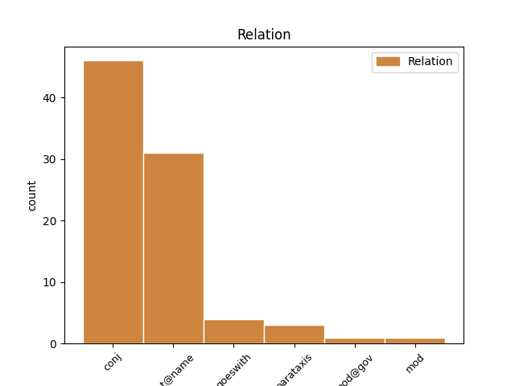
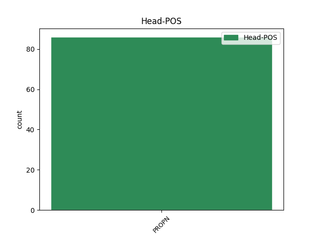
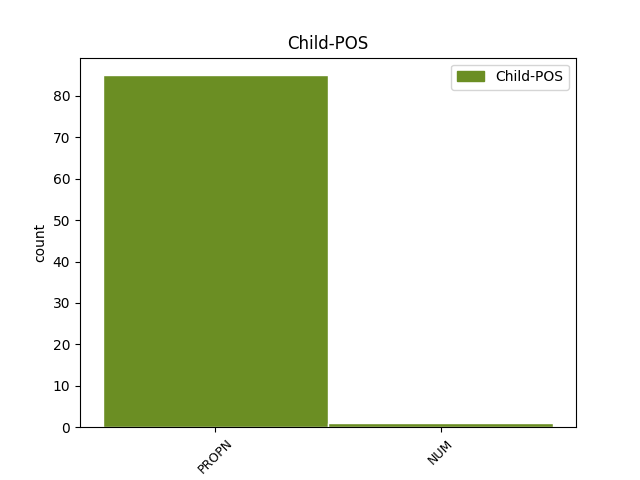

Distribution of features within this leaf



Agreement Rules sorted by frequency.
- When the dependent token is the flat multiword expression(flat@name) of the head token, and the head token is PROPN and the dependent token is PROPN.
1 И _ _ _ _ 0 _ _ _
2 так _ _ _ _ 0 _ _ _
3 и _ _ _ _ 0 _ _ _
4 играли _ _ _ _ 0 _ _ _
5 развеселые _ _ _ _ 0 _ _ _
6 каверы _ _ _ _ 0 _ _ _
7 на _ _ _ _ 0 _ _ _
8 Billy _ _ _ _ 0 _ _ _
9 Jean _ _ _ _ 0 _ _ _
10 и _ _ _ _ 0 _ _ _
11 Джо Джо PROPN _ Animacy=Anim|Case=Gen|Gender=Masc|Number=Sing 0 _ _ _
12 Дассена Дассен PROPN _ Animacy=Anim|Case=Gen|Gender=Masc|Number=Sing 11 flat@name _ _
13 до _ _ _ _ 0 _ _ _
14 часу _ _ _ _ 0 _ _ _
15 ночи _ _ _ _ 0 _ _ _
16 ( _ _ _ _ 0 _ _ _
17 начав _ _ _ _ 0 _ _ _
18 в _ _ _ _ 0 _ _ _
19 10 _ _ _ _ 0 _ _ _
20 , _ _ _ _ 0 _ _ _
21 из _ _ _ _ 0 _ _ _
22 чего _ _ _ _ 0 _ _ _
23 сделаны _ _ _ _ 0 _ _ _
24 эти _ _ _ _ 0 _ _ _
25 мальчики _ _ _ _ 0 _ _ _
26 ?! _ _ _ _ 0 _ _ _
27 ) _ _ _ _ 0 _ _ _
28 . _ _ _ _ 0 _ _ _
1 Они _ _ _ _ 0 _ _ _
2 любую _ _ _ _ 0 _ _ _
3 войну _ _ _ _ 0 _ _ _
4 могут _ _ _ _ 0 _ _ _
5 раздуть _ _ _ _ 0 _ _ _
6 с _ _ _ _ 0 _ _ _
7 спортсменами _ _ _ _ 0 _ _ _
8 Тосненский _ _ _ _ 0 _ _ _
9 области _ _ _ _ 0 _ _ _
10 с _ _ _ _ 0 _ _ _
11 которыми _ _ _ _ 0 _ _ _
12 вместе _ _ _ _ 0 _ _ _
13 воруют _ _ _ _ 0 _ _ _
14 в _ _ _ _ 0 _ _ _
15 ЖКХ _ _ _ _ 0 _ _ _
16 с _ _ _ _ 0 _ _ _
17 партиями _ _ _ _ 0 _ _ _
18 Справедливая _ _ _ _ 0 _ _ _
19 Россия _ _ _ _ 0 _ _ _
20 , _ _ _ _ 0 _ _ _
21 Единая _ _ _ _ 0 _ _ _
22 Россия Россия PROPN _ Animacy=Inan|Case=Nom|Gender=Fem|Number=Sing 0 _ _ _
23 и _ _ _ _ 0 _ _ _
24 КПРФ КПРФ PROPN _ Animacy=Inan|Case=Nom|Gender=Fem|Number=Sing 22 conj _ _
25 как _ _ _ _ 0 _ _ _
26 выяснилось _ _ _ _ 0 _ _ _
27 , _ _ _ _ 0 _ _ _
28 с _ _ _ _ 0 _ _ _
29 козлами _ _ _ _ 0 _ _ _
30 при _ _ _ _ 0 _ _ _
31 судах _ _ _ _ 0 _ _ _
32 заботясь _ _ _ _ 0 _ _ _
33 о _ _ _ _ 0 _ _ _
34 правах _ _ _ _ 0 _ _ _
35 уголовников _ _ _ _ 0 _ _ _
36 ! _ _ _ _ 0 _ _ _
1 Где _ _ _ _ 0 _ _ _
2 Д Дашков PROPN _ Animacy=Anim|Case=Nom|Gender=Masc|Number=Sing 0 _ _ _
3 ашко goeswith PROPN _ Animacy=Anim|Case=Nom|Gender=Masc|Number=Sing 2 goeswith _ _
4 в _ _ _ _ 0 _ _ _
5 ? _ _ _ _ 0 _ _ _
1 а _ _ _ _ 0 _ _ _
2 в _ _ _ _ 0 _ _ _
3 залетах _ _ _ _ 0 _ _ _
4 другими _ _ _ _ 0 _ _ _
5 спаржами _ _ _ _ 0 _ _ _
6 телеграммою _ _ _ _ 0 _ _ _
7 на _ _ _ _ 0 _ _ _
8 версты _ _ _ _ 0 _ _ _
9 алексан Александр PROPN NOUN Animacy=Anim|Case=Nom|Gender=Masc|Number=Sing 0 _ _ _
10 -- _ _ _ _ 0 _ _ _
11 дру Goeswith PROPN NOUN Animacy=Anim|Case=Dat|Gender=Masc|Number=Sing 9 parataxis _ _
12 так _ _ _ _ 0 _ _ _
13 и _ _ _ _ 0 _ _ _
14 кажется _ _ _ _ 0 _ _ _
15 кто-то _ _ _ _ 0 _ _ _
16 кикает _ _ _ _ 0 _ _ _
17 за _ _ _ _ 0 _ _ _
18 кусты _ _ _ _ 0 _ _ _
1 Новый _ _ _ _ 0 _ _ _
2 компромат _ _ _ _ 0 _ _ _
3 на _ _ _ _ 0 _ _ _
4 мошенниц _ _ _ _ 0 _ _ _
5 в _ _ _ _ 0 _ _ _
6 офисах _ _ _ _ 0 _ _ _
7 РАНХиГС _ _ _ _ 0 _ _ _
8 им _ _ _ _ 0 _ _ _
9 Путина _ _ _ _ 0 _ _ _
10 СПб _ _ _ _ 0 _ _ _
11 ФПиКА _ _ _ _ 0 _ _ _
12 и _ _ _ _ 0 _ _ _
13 Универа Универ PROPN _ Animacy=Inan|Case=Gen|Gender=Masc|Number=Sing 0 _ _ _
14 СПб СПб PROPN _ Animacy=Inan|Case=Gen|Gender=Masc|Number=Sing 13 mod _ _
15 ректорат _ _ _ _ 0 _ _ _
16 . _ _ _ _ 0 _ _ _
Disagree Examples:
1 " _ _ _ _ 0 _ _ _
2 ... _ _ _ _ 0 _ _ _
3 Выше _ _ _ _ 0 _ _ _
4 выдуманной _ _ _ _ 0 _ _ _
5 " _ _ _ _ 0 _ _ _
6 Партии _ _ _ _ 0 _ _ _
7 Молодежи _ _ _ _ 0 _ _ _
8 " _ _ _ _ 0 _ _ _
9 -- _ _ _ _ 0 _ _ _
10 партии _ _ _ _ 0 _ _ _
11 , _ _ _ _ 0 _ _ _
12 уже _ _ _ _ 0 _ _ _
13 представленные _ _ _ _ 0 _ _ _
14 в _ _ _ _ 0 _ _ _
15 парламенте _ _ _ _ 0 _ _ _
16 , _ _ _ _ 0 _ _ _
17 а _ _ _ _ 0 _ _ _
18 также _ _ _ _ 0 _ _ _
19 ПАРНАС ПАРНАС PROPN _ Animacy=Inan|Case=Nom|Gender=Masc|Number=Sing 0 _ _ _
20 , _ _ _ _ 0 _ _ _
21 " _ _ _ _ 0 _ _ _
22 Яблоко Яблоко PROPN _ Animacy=Inan|Case=Nom|Gender=Neut|Number=Sing 19 conj _ SpaceAfter=No
23 " _ _ _ _ 0 _ _ _
24 и _ _ _ _ 0 _ _ _
25 ... _ _ _ _ 0 _ _ _
1 Уж _ _ _ _ 0 _ _ _
2 и _ _ _ _ 0 _ _ _
3 Яблоко Яблоко PROPN _ Animacy=Inan|Case=Nom|Gender=Neut|Number=Sing 0 _ _ _
4 в _ _ _ _ 0 _ _ _
5 Думу _ _ _ _ 0 _ _ _
6 прошло _ _ _ _ 0 _ _ _
7 , _ _ _ _ 0 _ _ _
8 и _ _ _ _ 0 _ _ _
9 Гудков Гудков PROPN _ Animacy=Anim|Case=Nom|Gender=Masc|Number=Sing 3 conj _ SpaceAfter=No
10 . _ _ _ _ 0 _ _ _
1 Примеры _ _ _ _ 0 _ _ _
2 у _ _ _ _ 0 _ _ _
3 нас _ _ _ _ 0 _ _ _
4 - _ _ _ _ 0 _ _ _
5 ЯБЛОКО Яблоко PROPN _ Animacy=Inan|Case=Nom|Gender=Neut|Number=Sing 0 _ _ _
6 , _ _ _ _ 0 _ _ _
7 ПАРНАС ПАРНАС PROPN _ Animacy=Inan|Case=Nom|Gender=Masc|Number=Sing 5 conj _ SpaceAfter=No
8 , _ _ _ _ 0 _ _ _
9 Партия _ _ _ _ 0 _ _ _
10 Роста _ _ _ _ 0 _ _ _
11 , _ _ _ _ 0 _ _ _
12 и _ _ _ _ 0 _ _ _
13 т. _ _ _ _ 0 _ _ _
14 п. _ _ _ _ 0 _ _ _
1 @kprf @kprf PROPN _ Animacy=Inan|Case=Nom|Gender=Fem|Number=Sing 0 _ _ _
2 один один NUM _ Animacy=Inan|Case=Acc|Gender=Masc 1 mod@gov _ _
3 раз _ _ _ _ 0 _ _ _
4 уже _ _ _ _ 0 _ _ _
5 передали _ _ _ _ 0 _ _ _
6 - _ _ _ _ 0 _ _ _
7 в _ _ _ _ 0 _ _ _
8 итоге _ _ _ _ 0 _ _ _
9 каждый _ _ _ _ 0 _ _ _
10 первый _ _ _ _ 0 _ _ _
11 дебил _ _ _ _ 0 _ _ _
1 Логично _ _ _ _ 0 _ _ _
2 предположить _ _ _ _ 0 _ _ _
3 , _ _ _ _ 0 _ _ _
4 что _ _ _ _ 0 _ _ _
5 бедные _ _ _ _ 0 _ _ _
6 и _ _ _ _ 0 _ _ _
7 необразованные _ _ _ _ 0 _ _ _
8 крестьяне _ _ _ _ 0 _ _ _
9 , _ _ _ _ 0 _ _ _
10 которые _ _ _ _ 0 _ _ _
11 едут _ _ _ _ 0 _ _ _
12 за _ _ _ _ 0 _ _ _
13 сотни _ _ _ _ 0 _ _ _
14 километров _ _ _ _ 0 _ _ _
15 для _ _ _ _ 0 _ _ _
16 того _ _ _ _ 0 _ _ _
17 , _ _ _ _ 0 _ _ _
18 чтобы _ _ _ _ 0 _ _ _
19 зарубить _ _ _ _ 0 _ _ _
20 бабла _ _ _ _ 0 _ _ _
21 тяжелым _ _ _ _ 0 _ _ _
22 физическим _ _ _ _ 0 _ _ _
23 трудом _ _ _ _ 0 _ _ _
24 , _ _ _ _ 0 _ _ _
25 имеют _ _ _ _ 0 _ _ _
26 к _ _ _ _ 0 _ _ _
27 " _ _ _ _ 0 _ _ _
28 Великой _ _ _ _ 0 _ _ _
29 Русской _ _ _ _ 0 _ _ _
30 Культуре _ _ _ _ 0 _ _ _
31 " _ _ _ _ 0 _ _ _
32 ™ _ _ _ _ 0 _ _ _
33 такое _ _ _ _ 0 _ _ _
34 же _ _ _ _ 0 _ _ _
35 отношение _ _ _ _ 0 _ _ _
36 , _ _ _ _ 0 _ _ _
37 как _ _ _ _ 0 _ _ _
38 жующий _ _ _ _ 0 _ _ _
39 насвай _ _ _ _ 0 _ _ _
40 дворник _ _ _ _ 0 _ _ _
41 Ровшан _ _ _ _ 0 _ _ _
42 из _ _ _ _ 0 _ _ _
43 Южного _ _ _ _ 0 _ _ _
44 Бутово _ _ _ _ 0 _ _ _
45 — _ _ _ _ 0 _ _ _
46 к _ _ _ _ 0 _ _ _
47 наследию _ _ _ _ 0 _ _ _
48 Омара Омар PROPN _ Animacy=Anim|Case=Gen|Gender=Masc|Number=Sing 0 _ _ _
49 Хайяма _ _ _ _ 0 _ _ _
50 и _ _ _ _ 0 _ _ _
51 Авиценны Авиценна PROPN _ Animacy=Inan|Case=Gen|Gender=Fem|Number=Sing 48 conj _ SpaceAfter=No
52 . _ _ _ _ 0 _ _ _